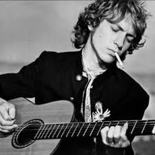

THEPOLICE

The Police fue un importante e influyente trío británico de rock activo desde finales de la década de 1970 hasta mediados de la década de 1980, bajo el formato de power trio. Su estilo musical estuvo marcado por influencias del rock, reggae y jazz. Se formó en 1977 en Londres, tocaron oficialmente hasta 1986, con una pausa entre marzo de 1984 hasta julio de 1986 y nunca emitieron un comunicado sobre su disolución.3 La banda ha vendido casi 200 millones de copias por el mundo.
Liderados por Gordon Matthew Sumner, de nombre artístico Sting ("aguijón" en inglés y que deriva de un jersey de rugby a rayas amarillas y negras, estilo avispa, que el bajista siempre llevaba puesto en su juventud), Andy Summers en la guitarra, y Stewart Copeland como baterista, The Police fue el conjunto New Wave más popular de los años 80. Su música se caracteriza por ser un impetuoso pop-rock "new wave" enriquecido con algunas dosis de reggae, virtuosismo instrumental y compositivo. También fue la única banda New Wave que en sus giras traspasó el área Europa-Estados Unidos, contribuyendo de esta manera a globalizar la renovación de la música rock-pop.
El trío además del cantante y bajista Sting (nacido el 2 de octubre de 1951 en Newcastle upon Tyne), estaba compuesto por el baterista Stewart Copeland (nacido el 16 de julio de 1952 en la localidad estadounidense de Alexandria, Virginia) y el guitarrista de origen francés, Henry Padovani, quien pronto sería sustituido por Andy Summers (nacido el 31 de diciembre de 1942 en Lancashire), para esos tiempos era un músico que ya contaba con un largo recorrido en la música rock, pues había estado en bandas como The Animals o Zoot Money. También había tocado con Kevin Ayers y Neil Sedaka.
En enero de 1977, Copeland, Sting y Padovani comenzaron a intentar abrirse paso en el género punk. Su debut discográfico se produjo con el sencillo «Fall Out», canción compuesta por Copeland, editada en el sello independiente IRS. El tema recogió una relativa resonancia pero no fue suficiente para el despegue de la banda. El primer problema al cual el grupo se vio enfrentado, fue la poca experiencia de Padovani como guitarrista, lo cual limitaba la capacidad creativa del grupo. Por ese entonces el líder de la banda era Copeland, quien componía y hasta tocaba la guitarra («Fall Out» fue íntegramente grabada con Copeland en la guitarra). Copeland insistía en que el grupo tenía que seguir la corriente del punk y en mantener a Henry en la formación. Sting no estaba conforme ya que no le gustaba el punk por lo limitada de su estructura y estaba frustrado al no poder desplegar sus capacidades.
El encuentro con Andy Summers vendría al poco tiempo, cuando, durante unos ensayos con el músico Mike Howlett, del grupo Gong coinciden los 3 por primera vez. Summers ya conocía de antes a Howlett y The Police (hasta ese momento con Copeland, Sting y Padovani) iba a participar de un tributo a Gong. Tras los ensayos para el tributo Howlett propone a Sting, Copeland y Summers formar una banda pero a lo inusual de mantener en el mismo grupo dos bajistas (Howlett y Sting). De esas sesiones se registraron varias demos que posteriormente se publicarían bajo el título Police Academy como grupo Strontium 90. En ese álbum aparece una versión demo de «Every Little Thing She Does Is Magic». Summers percibe que hay algo que podría lograr en esa banda, pero Padovani no encaja, Summers es un tipo experimentado y que a esas alturas ya se había codeado con todos los músicos de su época (Eric Clapton, Jimi Hendrix o Jimmy Page) y Padovani tenía un estilo mucho más cercano al punk. Copeland empecinado con mantener a Padovani en la banda sugirió probar con un cuarteto pero la diferencia seguía siendo abismal entre ambos guitarristas, la banda no enacajaba y no había un buen ambiente. Todo eso llevó a Summers a darles un ultimátum a Sting y Copeland: "quiero que el grupo sea un trío". Summers relataba en su libro "El tren que no perdí" esa situación diciendo que "me sentía mal porque le estaba quitando el empleo a otra persona, pero ¿de qué empleo hablo, el del guitarrista de una banda que no es nada y no ha llegado a ninguna parte?".
Sting finalmente pidió a Padovani que dejase la banda y quedó la formación que los hizo legendarios. El grupo no obstante aún tenía varios problemas por resolver: la falta de lugares donde ir a tocar o una cantidad de temas convincentes o lugares donde poder grabar con cierta comodidad. Pronto todo empezaría a cambiar: The Police tenía que ir a telonear a una banda a París, pero el concierto se canceló y para colmo se le echó a perder el viejo automóvil a Andy y mientras empujaban la chatarra sobre un puente de París les pilló la lluvia. A la noche Copeland y Summers fueron a ver Star Wars. Sting prefirió salir a caminar y en medio de eso paseó por Pigalle, lugar donde se ven "lindas prostitutas". Fruto de esa observación Sting compuso una canción en un ritmo bossa nova; después junto a Stewart Copeland deciden realizarle unas modificaciones: ponerle ritmo reggae y un coro punk. El resultado se llamó «Roxanne».
El resultado de esa grabación le pareció excelente a Miles, hermano de Copeland y mánager de la banda, quien, hasta ese entonces, no le veía futuro a la banda y dijo que los llevaría al sello A&M. En su primera edición, «Roxanne» no consiguió llamar la atención. La canción se incluyó en su primer álbum, Outlandos d'Amour (1978), uno de sus mejores trabajos y el más enérgico e inmediato, en donde sonaban temas clásicos del grupo como «So Lonely», «Can't Stand Losing You», «Next to you» o «Born in the 50's».
Este brillante inicio de su discografía se confirmaría con discos que copaban las listas de ventas de toda Europa como Reggatta de Blanc (1979), álbum que incluye canciones muy conocidas como «Message in a Bottle» o «Walking on the Moon». Zenyattà Mondatta (1980) el álbum que coronó a la banda en los Estados Unidos alcanzó el número 5 en la lista Billboard gracias a canciones como «Don't Stand So Close to Me» o «De Do Do Do, De Da Da Da». Estos dos últimos discos fueron co-producidos con la banda por Nigel Gray quien había ocupado puesto de ingeniero de sonido de su debut.
Traspasados los años 80 The Police fue abandonando su condición new wave para centrarse en su vertiente más pop. Así sucede en Ghost in the Machine (1981), un disco producido por Hugh Padgham que incluye los sencillos «Spirits in the Material World», «Invisible Sun» y «Every Little Thing She Does Is Magic». El éxito permanecía invariable en el viejo continente alcanzando el número 2 en los Estados Unidos. Comenzando la década realizan una gira a América del Sur que ejerce una importantísima influencia en la embrionaria movida New Wave suramericana. El 19 y 20 de febrero de 1982 se presentan en el Festival de Viña del Mar (Chile) alcanzando gran éxito entre el público juvenil asistente.
En 1983 publican Synchronicity un álbum que obtuvo excelentes críticas gracias a un conjunto de canciones muy bien valoradas como «Every Breath You Take», que se convertiría en todo un himno de la banda, además de videoclips muy bien realizados como «Wrapped Around Your Finger» (que haría famoso el rostro de Sting) o el de «Every Breath You Take».20 La gira de Synchronicity les permitió tocar en el Shea Stadium lugar donde The Beatles se presentó en 1965 ante 48.000 personas. Este sería el punto de inflexión de la fama del trío.
El último concierto oficial de The Police en su etapa original fue el 4 de marzo de 1984 en Australia en la última fecha de la gira del disco Synchronicity. Las tensiones y egos entre los distintos componentes provocaron la disolución del trío aunque nunca emitieron un comunicado sobre su disolución. Sting inició una carrera en solitario en 1985 llena de triunfos comerciales en donde había lugar para el pop con influencias jazz, soul o AOR.
Copeland tendió, entre otros proyectos, hacia la composición de bandas sonoras. Cuando todavía militaba en The Police editó varios EP's bajo el seudónimo Klark Kent, y después de la separación del grupo formó parte de conjuntos como Animal Logic o el más reciente Oysterhead, junto al bajista y cantante de Primus, Les Claypool el guitarrista Trey Anasthasio de Phish. Colaboró también tocando la batería en algunas piezas del álbum So de Peter Gabriel.
Por su parte Summers colaboró con grupos de rock progresivo y jazz. Andy Summers tocó como invitado en algunos conciertos de la gira de Sting en 1991, perteneciente a su disco solista The Soul Cages. Sting grabó como músico invitado en un disco de jazz de Summers.
Durante este periodo The Police también realizó diversos conciertos en vivo como en 3 conciertos benéficos en junio de 1986 organizados por Amnistía Internacional. También el grupo tocó en la boda del propio Sting celebrada en 1992. En 2003 el trío se reunió con motivo de su ingreso en el Salón de la Fama. Cuatro años más tarde se reunieron para la entrega de los premios Grammy en febrero del 2007 e interpretaron «Roxanne».
A comienzos del 2007 luego de una serie de rumores que sugerían una posible reunión del grupo como conmemoración de los 30 años de su primer sencillo, la banda se reúne para tocar en los Grammys, abriendo la ceremonia al grito de "Somos The Police, y estamos de vuelta para continuar tocando Roxanne". En los meses siguientes The Police anunció una gira mundial, rememorando los viejos éxitos de la banda. La gira comenzó en Vancouver a finales de mayo, y terminó en Nueva York el 7 de agosto de 2008, después de 150 conciertos, fue una de las giras más exitosa del año. Recorrieron Estados Unidos, México, Chile, Argentina, Brasil, Japón, España y Canadá entre otros países.